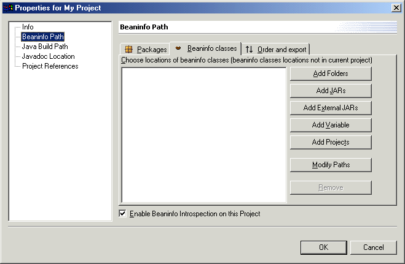

BeanInfo classes can exist in a separate project from Java beans, and can be in a .jar file. This situation could occur if you have some Java beans and their BeanInfo classes in two separate .jar files. To use the Java beans and browse their source code, they can be imported into a project as a zip or .jar file. Then the contents of the file can be expanded to their individual entries. Alternatively, to save space, the BeanInfo classes can be left in the .jar, and the file is imported as is.
A .jar file represents a zipped directory structure. For the BeanInfo Path to include any packages within the .jar in the introspector's search path, the .jar file must first be included and the package selected. To do this, use the Add JARs button in the BeanInfo classes tab of the BeanInfo Path dialog.

For example, MyProject contains the Java bean runtimeclasses.MyBeanInfo. The .jar file designtime.jar contains its BeanInfo in the package beaninfoclasses.
The designtime.jar file should be imported into the project MyProject using the import wizard from the File menu. If you specify that you want to import designtime.jar as a zip file or a .jar file, its contents will be expanded and all you need to do is use the packages tab of the BeanInfo Path to include the beaninfoclasses package in the introspector's search path. You can also import designtime.jar as an unexpanded resource in MyProject. Since the designtime.jar is only used during design, not build, it does not need to be added to the Java Build path.
Use the Add JARs button on the BeanInfo classes tab on the BeanInfo Path dialog. This will bring up a list of all folders containing .jar files as shown below. On this dialog select the .jar file containing the BeanInfo classes and press OK.
After specifying that designtime.jar contains BeanInfo classes, you must add its packages that include the BeanInfo classes to the search path. Do this by selecting the Modify Paths button in the BeanInfo classes tab, making sure the entry for the designtime.jar is selected. The Modify Paths dialog brings up a list of defined packages for the selected entry. This is the same dialog shown earlier for BeanInfo classes that existed in another project. However, when Choose packages is chosen, a dialog is opened where you must enter the name of the package.

This dialog does not allow you to select from a list of available packages in the .jar file. Instead, you must know the name of the package and enter it before clicking OK.
jar file containing the BeanInfo classes has not been imported into a project
In addition to importing the .jar file into the project containing the Java beans, it is possible that the .jar file exists in the file system and not in Eclipse. In this situation, click the Add External JARs button in the BeanInfo classes page.
A file browser for .jar file selections opens. Having included the .jar file in the BeanInfo classes list, you must still specify its packages that contain the BeanInfo classes. Do this by selecting the Modify Paths button and typing the package name in the dialog, as shown above for the scenario where the .jar file existed in the project.